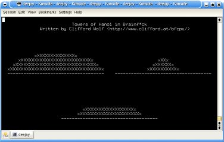

The Brainf*ck Compiler Project

The Brainf*ck compiler package includes:
- bfa - An assembler for Brainf*ck which handles named
variables, etc.
- bfc - A compiler for a high-level language. It generates
code for the bfa assembler.
- bfrun - A simple Brainf*ck runtime.
- examples - Various small examples for bfc and
bfa code.
- hanoi.bfc - A bigger program written in bfc - a "Towers
of Hanoi" with semi-graphical terminal output (see screenshot).
The bfc
source is about 8kB, the compiled brainf*ck
code about 64kB big. Details about this example program can be
found here.
- README - This project even has documentation! ;-)
Download bfcomp-0.09.tar.gz now or browse
the subversion
repository.
I've also developed a Brainf*ck CPU.